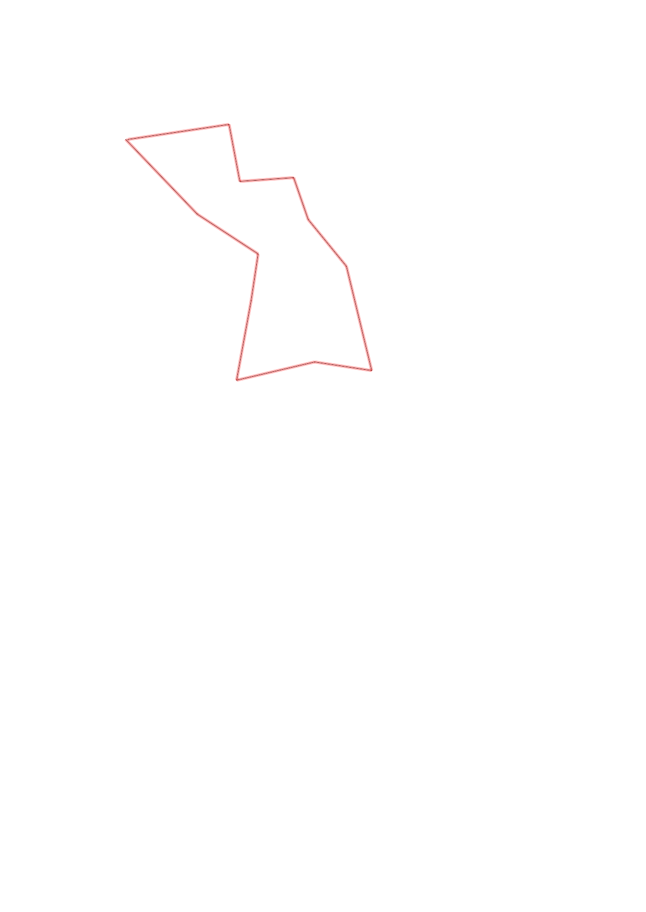
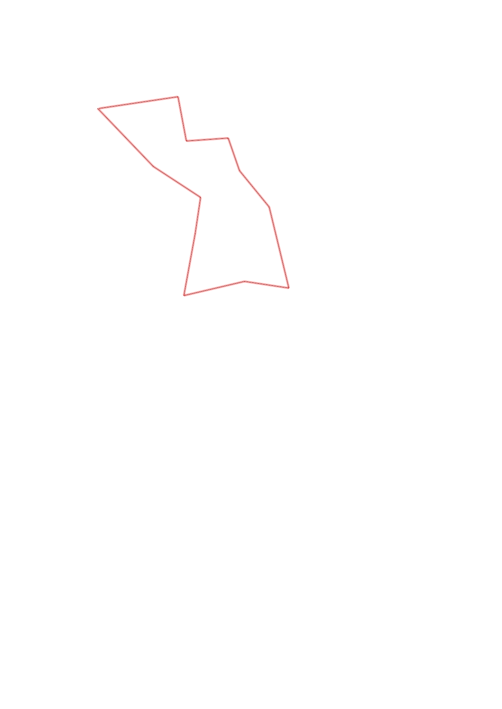

| Control |
Points |
Time Punched |
Distance |
Your Time |
Pace |
Place |
Fastest Time |
Median Time |
% Behind Fastest |
| 42 |
40 |
|
0.48 |
0:02:36 |
05:25 |
6 / 7 |
0:02:11 |
0:02:17 |
19% |
| 95 |
90 |
|
0.34 |
0:04:29 |
13:11 |
2 / 6 |
0:02:25 |
0:04:50 |
85% |
| 43 |
40 |
|
0.22 |
0:02:08 |
09:41 |
4 / 6 |
0:01:27 |
0:01:53 |
47% |
| 75 |
70 |
|
0.38 |
0:02:19 |
06:05 |
2 / 6 |
0:01:45 |
0:03:10 |
32% |
| 35 |
30 |
|
0.37 |
0:04:31 |
12:12 |
1 / 1 |
0:04:31 |
0:04:31 |
0% |
| 104 |
100 |
|
0.27 |
0:05:46 |
21:21 |
2 / 2 |
0:04:14 |
0:05:00 |
36% |
| 63 |
60 |
|
0.5 |
0:06:52 |
13:44 |
2 / 2 |
0:06:17 |
0:06:34 |
9% |
| 52 |
50 |
|
0.28 |
0:03:40 |
13:05 |
1 / 1 |
0:03:40 |
0:03:40 |
0% |
| 57 |
50 |
|
0.21 |
0:04:06 |
19:31 |
1 / 1 |
0:04:06 |
0:04:06 |
0% |
| 32 |
30 |
|
0.25 |
0:03:04 |
12:16 |
2 / 2 |
0:02:48 |
0:02:56 |
9% |
| 33 |
30 |
|
0.27 |
0:02:59 |
11:02 |
2 / 3 |
-1 day, 12:28:49 |
0:02:59 |
-99% |
| Finish |
0 |
|
0.48 |
0:04:21 |
09:03 |
2 / 2 |
0:03:20 |
0:03:50 |
30% |
Total Distance Covered: 4.05km
Points Scored: 590
Late Penalty: 0
Final Score: 590
Total Time: 0hours 46minutes 51seconds
Efficiency: 145.68 points/km
 
